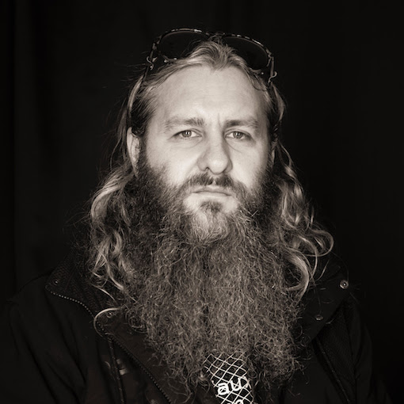

Welcome to the most beautiful possibility.
What a ride it is to create a festival. The team has landed, the musicians have confirmed, the venue is a go - and we are ecstatic about the beauty and balance, the relationships and the experiences that are housed within this idea; the NOW now isn't like most festivals. Nothing, or very little that is presented, has been pre-conceived. The program is less a promise than it is a possibility, and in that you all play a vital role.
This year, the NOW now has received zero funding from the Australia Council or CreateNSW, even though the program is remarkable and our track record is real; 18 years and counting.
So, as we have so many times before, we are relying on the power of the punters to support the generosity and commitment of the artists. At this time, gestures of belief and positivity are more vital than ever, here are four days full.
The Venue
107 projects, Redfern (visit it!)
The Price
$20 per night (or more if you can afford it)
$60 for a festival pass (as above) available on opening night.
The Social Media
- Thursday - Sunday Upstairs performances and installations
Thursday January 24
- 7:00 – 9:00
Adam Pultz Melbye, solo for feedback bass with internal sound-reactive LED lights
2 hours - 9:00 – 11:00
Sumn Conduit:
Sonya Holowell, voice
Ben Carey, modular synthesiser
2 hours - Ongoing
Gail Priest: The Languages of Listening sessions
In the garden upstairs - FRIDAY: 7pm, 7.30, 8pm, 8.30, 9pm, 9.30
- SUNDAY: 4pm, 4.30, 5pm, 5.30, 6pm. 6.30
- Tickets essential book through eventbright. (this is a one audience member per/session)
- The Languages of Listening interviews have been developed as part of Experimenta Make Sense: International Triennial of Media Art, 2018-2020. www.experimenta.org/makesense.
The NOW now festival 2019
Thursday January 24
- 7:00
Welcome to Country - 7:30
PLANT
Éric Normand (Quebec), electric bass
Jim Denley, woodwinds - 8:15
Reuben Lewis, trumpet
Emily Bennett, voice - 9:00
Pia Van Gelder, live electronic circuits - 9:30
Birgit Ulher(Germany), solo piece 'Traces - for trumpet, radio, speaker, objects and tape' - 10:30
Alister Spence, piano/rhodes solo - 11:15
Knitted Abyss
Lucy Claire, guitar
Anna John, guitar Friday January 25, 2019
- 7:00
Jasmine Leung, Urhu
Pierre-Yves Martel, (Montreal), viola da gamba - 7:45
Jefferson Mayday Mayday, electronics - 8:30
THE ASTRONOMICAL UNIT
Matthias Müller (Berlin), trombone
Clayton Thomas, double bass
Christian Marian (Berlin), drums - 9:15
Sage Pbbbt, voice
Monika Brooks, computer & accordion - 10:00
Audrey Rose Burden, movement - 10:15
Jónó Mí Ló (Ohio / Syd), electronics - 11:00
ASK THE AXES
David Watson, guitar & bagpipes
Tony Buck, drums & guitar Saturday January 26, 2019
- Start in Redfern Park
- 6.30-7pm Acknowledgement to Country, Smoking Ceremony.
'Smoking' continues throughout following participatory exercise: - 7- 7.30pm
’Acknowledging Country’ audio crawl for concert-goers in Redfern Park. Track by Lizzie Thomson (Critical Path), Sonya Holowell and Melanie Herbert. Facilitates connecting to country through sound and movement - Move to 107 projects for concert program
- 7.30-8pm
Sydney Bass Tone Orchestra
Maximillian Alduca, double bass,
Clayton Thomas, Double bass,
Mary Rapp, double bass
Dave Ellis, Double bass
and Ben Ward, solo double bass / composition - 8:00 – 9:00pm
Melanie Louise Eden, solo performance
Charlie Sundborn, solo sax performance - 9:00
Sy Browne, electronics
Bron Watkins, violin
Saar Amptmeijer, electronics - 10:00pm Freya Schack-Arnott, cello
& Matthias Schack-Arnott, automated and played percussion - 10.30-11.30pm The Splinter Orchestra
Text score Dual Axis by Sonya Holowell with design by Elia Bosshard Sunday January 27, 2019
- Start at 4pm
- 4:00pm
Joyce Hinterding, radio waves
Peter Blamey, energy systems - 5:00pm
Score Club
Matthew Hopkins, Meg Clune, Andrew Fedorovich, Alexandra Spence, John wilton + Guest: Caitlin Rowley - 5:45
SNACKS
Jennifer Calliway, synthesiser, voice, percussion
Allanah Stewart, drums, percussion, found and self-made things
Dale Gorfinkel, vibraphone
and Guests - Break: Eat some food people
- 7:00
CUTLERY
Nicola Morton, electronics
Del Lumanta, electronics - 8:00
Kevin Wolfox Sheehan, electronics - 8:45
AIR FIELD
Birgit Ulher(Germany), trumpet
Petr Vrba, (Czech Republic), trumpet and electronics
Jack Stoneham, alto saxophone
Karen Uncanny Booth, baritone saxophone - and, to close the festival 
- 9:30
Chris Abrahams, Piano
Robin Fox, analogue systems
Clare Cooper, ¾ concert harp
The Program

That is one hell of a program
It's sad that we can't attribute the possibilities of our festival to our native funding bodies, but not surprisingly, a number of international organisations have helped bring some spectacular guests to participate.
So, our thanks go out to:
and of course...
for sharing the love from abroad.
WE NEED YOU
The NOW now 2019 is only possible because of the artists' generosity and passion.
And it's only going to continue with your support.
But, what can you do?
You can share the event on Facebook!
You can share this email with your friends and fellow music lovers (consider it a pyramid scheme inspired by Sun Ra's version)
You can come every night and have your optimism and bravery rewarded with new relationships, both sonic and physic.
You can print this poster out and put it up in your favourite record store.
Get the full size poster here
Thank you for you ongoing support. We'll be sending updates as we get closer to the festival, but for now, Happy New Year. We resolve to have a brilliant festival.
Take care and see you there,
Clayton Thomas
Freya Schack-Arnott
Jonathan Lockhart
Rhys Mottley
Sebastian Sequoia-Grayson
Alexandra Spence
and
Sonya Holowell